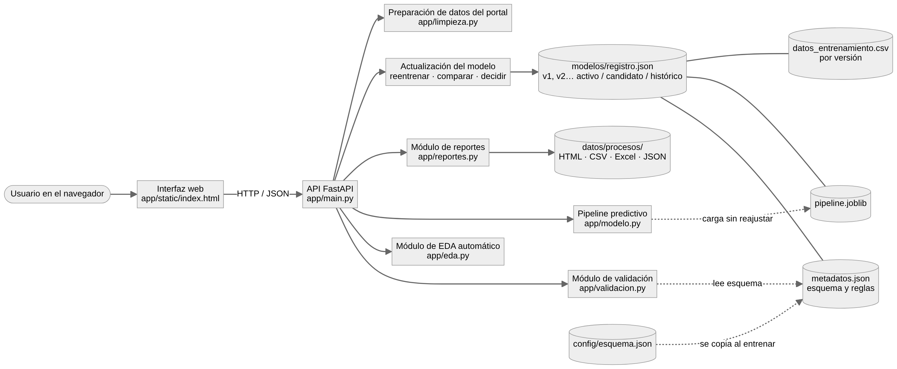

Administre la plataforma, supervise los datos energéticos, evalúe el modelo predictivo y gestione las operaciones técnicas de ZNI-APP.
Explore cómo se presta el servicio de energía en las Zonas No Interconectadas. Seleccione un departamento o municipio para consultar sus indicadores y registros.
Consulta los registros mensuales que coinciden con tu búsqueda.
Carga un archivo CSV o Excel relacionado con energía. ZNI-APP identificará automáticamente sus datos y preparará estadísticas, observaciones y gráficos para facilitar su comprensión.
Carga tu archivo. ZNI-APP identificará sus columnas, analizará los datos y preparará resultados comprensibles sin que tengas que configurar nada.
Formatos disponibles actualmente: CSV y Excel (.xlsx, .xls).
Antes de predecir, el archivo pasa por cuatro niveles de validación. Si es incompatible no se genera ninguna predicción: el sistema explica el problema, usted corrige el archivo y lo vuelve a cargar.
Convierte el CSV original «Estado de la prestación del servicio de energía en Zonas No Interconectadas» en la tabla del modelo, aplicando la limpieza documentada en el análisis (formato numérico, nombres por código DANE, códigos de localidad corregidos).
Qué modelo está activo, cómo se validó, qué variables usa y cómo actualizarlo con datos nuevos sin perder la versión anterior.
Cargue registros que ya tengan la energía real (energia_objetivo_kwh). Se validan, se integran, se reentrena y aparece una versión candidata. La activa no se reemplaza hasta que un administrador registre una decisión justificada.
Cada archivo que se carga queda registrado con sus reportes descargables: análisis exploratorio, compatibilidad, predicciones y actualización del modelo.
Archivos preparados para demostrar cada escenario obligatorio. «Probar» los carga directamente en la sección que corresponde; «Descargar» los guarda para revisarlos o modificarlos.
Actividad integradora del curso de Sistemas Inteligentes, Fundación Universitaria Uniclaretiana.
Docente: Carlos Stiwar Asprilla Mosquera
Base abierta «Estado de la prestación del servicio de energía en Zonas No Interconectadas», enero de 2020 a enero de 2026. Una fila por localidad y mes, con energía activa y reactiva, potencia máxima, fecha de demanda máxima y horas de servicio.
La interfaz consume la API; la API coordina validación, EDA, pipeline, reportes y versiones. Las reglas de validación viven en archivos de metadatos, no en la interfaz.

Cuentas que pueden reentrenar el modelo y decidir qué versión queda activa, y el historial de registros e inicios de sesión. Solo la ven los administradores.
Cada ingreso, salida, intento fallido, bloqueo y registro queda guardado con la fecha, la dirección y el navegador.